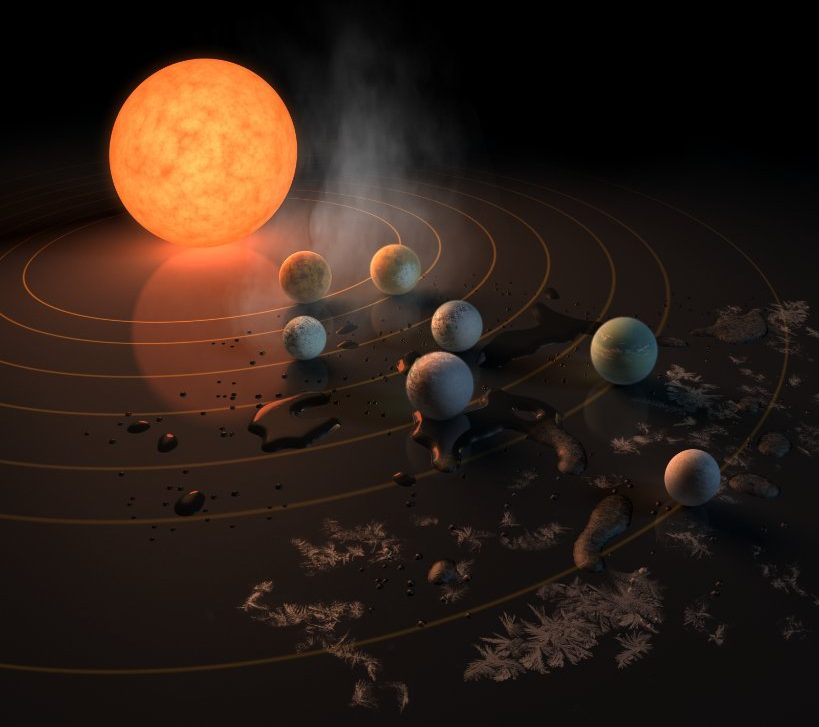

Un concierto de los Abbey Road equivale a un túnel hacia otra dimensión, a sumergirse en la música de los 60. Con un sonido impecable y un repertorio que recoge los más grandes éxitos de la banda Británica durante el periodo 1962 – 1966 y ahora amplia su repertorio a la segunda época, hasta 1970.
Un concierto de los Abbey Road equivale a un túnel hacia otra dimensión, a sumergirse en la música de los 60. Con un sonido impecable y un repertorio que recoge los más grandes éxitos de la banda Británica durante el periodo 1962 – 1966 y ahora amplia su repertorio a la segunda época, hasta 1970.
Los ABBEY ROAD se enfrentan al reto de ejecutar en directo las canciones que los Beatles grabaron, pero nunca tocaron en directo.
En el The Beatles Show de los Abbey Road se incorporan cambios de vestuario confeccionados siguiendo el patrón de los originales.

El Sistema Solar esta compuesto por el Sol y nueve planetas que giran en torno a él con sus respectivos satélites, moviéndose dentro de una masa gaseosa llamada gas interestelar, dentro de la cual existe además una enorme cantidad de asteroides y cometas. Hacemos la aclaración que hemos incluido a Plutón, al que la astronomía ha dejado de considerar como planeta. El Sol posee aproximadamente el 99% de la materia total de todo el sistema, mientras que los planetas, satélites y asteroides, solo el 1% restante.
El Sistema Solar está situado en uno de los tres brazos en espiral de esta galaxia llamado Orión, a unos 32.000 años luz del núcleo, alrededor del cual gira a la velocidad de 250 km por segundo, empleando 225 millones de años en dar una vuelta completa, lo que se denomina año cósmico.